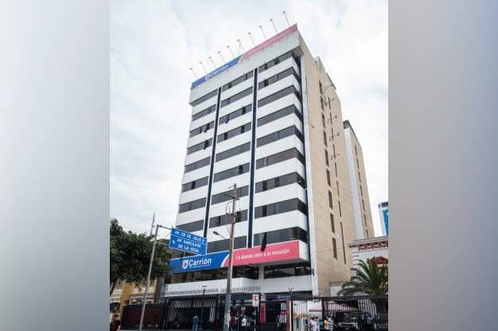

Nuestra Universidad Sideral Carrion tiene el honor del nombre gracias a un personaje un poco controvertido y gran catedratico Jesus Adrian Lujan Carrion , un magnate de los negocios y filantropo de la educacion de los Olivos , quien tuvo una vision y la pudo cumplir en crear una gran universidad que tuvo buena acogida en estos ultimos años.

La Universidad comenzo en un pequeño local en la avenida las palmeras en los Olivos , junto a la casa del fundador , el terreno fue donado por el municipio y con el tiempo y la gran acogida que tuvo se crearon mas sedes.
Sedes
La universidad actualmente cuenta con varias sedes teniendo como las principales: La Sede de Ventanilla , La Sede de Lima Centro y La Sede de San Isidro.

Ventanilla |
San Isidro |

Lima centro |
|||||||||||||||||||||||||||||||||||||||||||||||
|
Ingreso directo a la universidad Sideral Carrion
en el caso de primeros puestos
|
Posibilidad de doble bachillerato internacional gracias
al convenio con University of Arizona
|